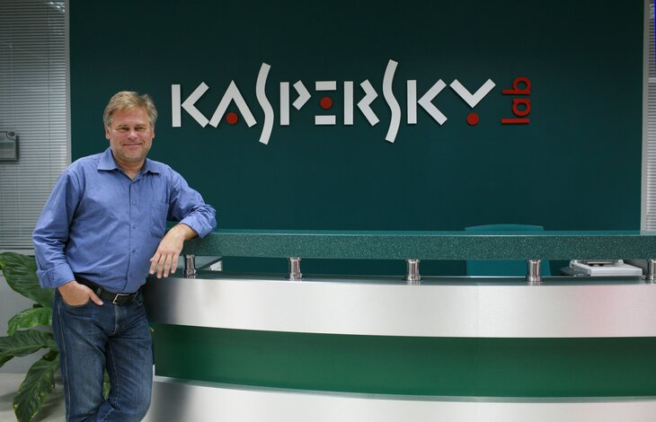

Карьера
В 1987 году Евгений Касперский поступил на работу в многопрофильный научно-исследовательский институт при Министерстве обороны СССР. Именно здесь он начал изучать компьютерные вирусы — после того, как в 1989 году столкнулся с вирусом Cascade. Проанализировав код вируса, Евгений разработал специальную утилиту для его лечения и заинтересовался данной тематикой.
В 1997 году Касперский и его коллеги приняли решение создать собственную компанию, выступив в качестве соучредителей «Лаборатории Касперского». Евгений не хотел, чтобы в названии компании фигурировала его фамилия, но его переубедила жена Наталья Касперская, также вошедшая в число соучредителей компании. В ноябре 2000 года продукт AVP был переименован в Антивирус Касперского.
Касперский руководил антивирусными исследованиями в компании со дня её основания по 2007 год, когда он занял пост генерального директора «Лаборатории Касперского».
Касперский — один из ведущих мировых специалистов в области защиты от вирусов. Он является автором большого числа статей и обзоров по проблеме компьютерной вирусологии, регулярно выступает на специализированных семинарах и конференциях в России и за рубежом. Касперский — член Организации исследователей компьютерных вирусов (CARO), которая объединяет экспертов в этой области.
В декабре 2012 года американский журнал Wired поместил Касперского на 8-е место в списке «самых опасных людей в мире» — за разоблачение американского кибероружия, созданного для шпионажа на Ближнем Востоке и срыва иранской ядерной программы
12 декабря 2022 года вошёл в состав экспертного совета при правительстве РФ.
